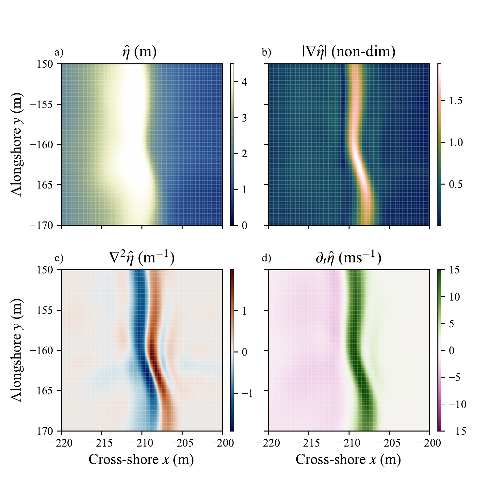

Continuous and Differentiable Neural Network Representations of the Surfzone Sea-Surface from Lidar Point Clouds
March 2024 – September 2026This project focused on applying a traditional neural network architecture to solving a novel oceanic sensing problem. Prior attempts of reconstructing sea surface lidar returns used traditional interpolation methods, and I adapted a methodology to return continuous and differentiable representations using sinusoidal representation networks (SIREN)
How it works
- We train a neural network to regress the sea surface from a set of lidar data
- We implement a so-called "sinusoidal representation network" (SIREN) creating an implicit neural representation or neural field of the sea surface
- We required a modification of the principled SIREN initialization and used a standard Xavier normal initialization.
My contribution
- I created the training pipeline, preprocessed the data, created the model architecture in custom PyTorch modules, evaluated the model, and documented the results.
- In the documentation, I described the methodology, created figures, and led the work on the paper while collaborating with 2 professors who helped me along the research process.